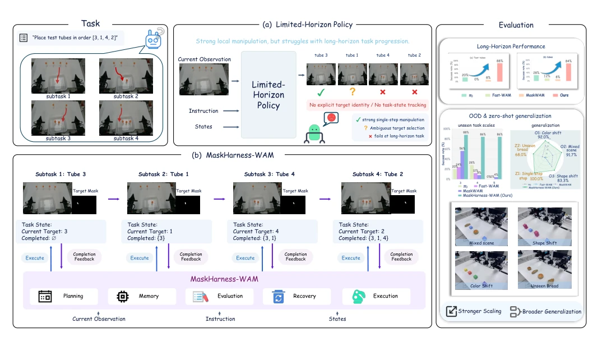
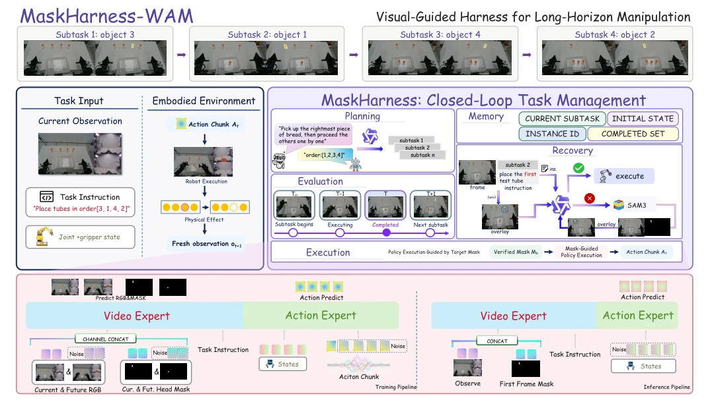
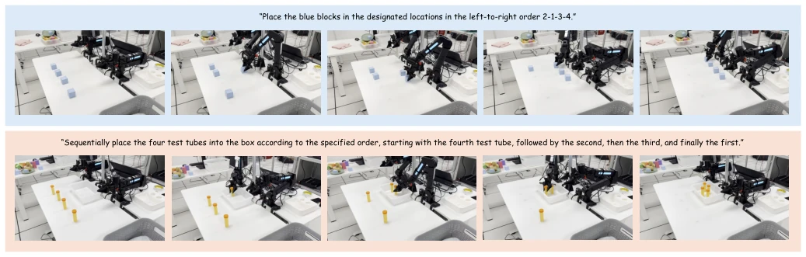
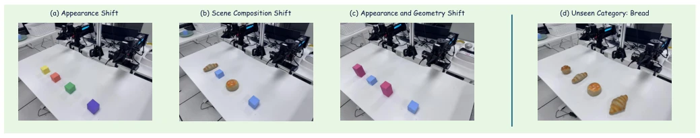

This paper adds an "external harness" to long-horizon manipulation. The authors did not rigidly focus on model architecture, but instead developed an external Harness to manage planning, state, and visual verification. The core idea is to use Mask to "pin" language instructions to specific instances, solving the problem of distinguishing identical-looking objects. The advantages are practical: it can run multi-object sequential tasks without modifying the underlying WAM, and real robot experiment success rates significantly outperform baselines. There are also drawbacks: it relies on large models like SAM3 and Qwen3.5 as middleware, whether this counts as pure algorithmic innovation is debatable, and inference depends on the initial frame mask; if the initial segmentation is wrong, it may cause chain reactions. However, for teams that do not want to retrain large models but want to improve long-horizon capabilities, this framework is indeed a practical engineering solution, typical of "cleverness" over "brute force", suitable for industrial scenario deployment.
The core difficulty in long-horizon robot manipulation lies in "recognizing targets" and "remembering the path". In real-world scenarios (e.g., industrial assembly), robots often need to manipulate multiple objects with identical appearances sequentially (e.g., screws, test tubes). Existing VLA or WAM-based strategies (e.g., π0 [1], Fast-WAM [2]) excel at local skills but lack long-horizon state tracking. They assume clear goals and stable task phases; once involving multi-instance sequential operations, class-level semantics cannot distinguish specific instances, leading to incorrect goal binding. Furthermore, completion of local actions does not represent correct progression of task phases; errors will cascade. Therefore, an external mechanism is needed to maintain target identity and task progress, coordinating strategy execution via visual feedback, rather than simply repeating calls to local strategies. This requires the system to possess the ability to dynamically update visual conditions, rather than static prompts.

Fig. 1. (a) Given a long-horizon instruction, limited-horizon policies (e.g. π0 [1] and Fast-WAM [2]) lack explicit instance identity and task-state tracking, leading to ambiguous target selection and failed stage transitions. (b) MaskHarness-WAM wraps the low-level policy with a task-level closed loop. It decomposes the instruction into ordered subtasks, maintains the current target and completed set, verifies a target mask before each execution, and advances only after completion is confirmed. (c) Evaluation shows improved long-horizon performance, together with stronger generalization under appearance shifts, scene-composition changes, geometry shifts, and zero-shot unseen-category transfer.
The system consists of a task-level Harness and a Mask-conditioned WAM strategy. The overall process is closed-loop: 1) Planning: Language instructions are decomposed into ordered subtasks, specifying spatial relations (e.g., "leftmost"). 2) Memory: Maintains execution state (current target ID, completed set). 3) Evaluation: Entry gate validates whether the target mask is correct (using VLM), exit gate evaluates whether the subtask is completed. 4) Recovery: If mask validation fails, re-observe and re-segment. 5) Execution: Verified mask input to WAM to generate action blocks. The innovation lies in using the mask as a dynamic interface, updating the mask at each subtask switch, ensuring the low-level strategy always operates on the correct instance. During training, actions, RGB, and future mask are jointly predicted; during inference, only the initial frame mask is needed. This design decouples planning and execution, enabling finite-horizon strategies to be composed into long-horizon behaviors.

Fig. 2. Framework of MaskHarness-WAM. Given a language instruction and current observations, the harness plans an ordered sequence of instance-specific subtasks and maintains the active target and execution history. At each subtask boundary, segmentation and visual verification establish a target mask for the low-level policy. Execution feedback determines whether to continue the current subtask or update the task state and switch targets; failed mask verification triggers re-observation and re-segmentation. The same policy is reused across successive targets (top). The lower panel shows joint RGB–mask–action training and action-only inference conditioned on the initial observation and target mask.
Tested on the ARX dual-arm platform, tasks are sequential placement of blocks and test tubes. Baselines include π0 [1], Fast-WAM [2], MaskWAM [18]. Metrics are Success Rate (SR) and Progress Rate (PR). Results show MaskHarness-WAM SR exceeds 84% in 3/4/5 instance settings, significantly better than MaskWAM (max 56%). Robust in OOD tests (color, scene, geometry changes) and zero-shot (bread) transfer, SR reaches 68%-92%. It was found that MaskWAM can partially maintain progress, but target selection is unreliable; pure VLA strategies fail severely out-of-distribution. Proves that instance-level grounding plus closed-loop management is key. Experiments also demonstrate generalization capability on unseen categories, validating system robustness.

Fig. 3. Real-robot sequential manipulation. Top: four blue blocks are placed in the specified left-to-right index order 2–1–3–4. Bottom: four test tubes are placed into the box in the order 4–2–3–1. Each row shows successive frames from one execution, illustrating target switching and task progression under MaskHarness-WAM.

Fig. 4. OOD and zero-shot generalization settings. (a) Appearance Shift: sequential manipulation of blocks with unseen colors. (b) Scene Composition Shift: sequential manipulation of bread objects in a mixed scene with block distractors. (c) Appearance and Geometry Shift: sequential manipulation of red cuboids among blue block distractors. (d) Zero-Shot Category Transfer: sequential manipulation of four bread instances without additional training on bread data.